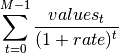

npv¶
-
numpy_financial.npv(rate, values)¶ Returns the NPV (Net Present Value) of a cash flow series.
- Parameters
- ratescalar
The discount rate.
- valuesarray_like, shape(M, )
The values of the time series of cash flows. The (fixed) time interval between cash flow “events” must be the same as that for which rate is given (i.e., if rate is per year, then precisely a year is understood to elapse between each cash flow event). By convention, investments or “deposits” are negative, income or “withdrawals” are positive; values must begin with the initial investment, thus values[0] will typically be negative.
- Returns
- outfloat
The NPV of the input cash flow series values at the discount rate.
Warning
npvconsiders a series of cashflows starting in the present (t = 0). NPV can also be defined with a series of future cashflows, paid at the end, rather than the start, of each period. If future cashflows are used, the first cashflow values[0] must be zeroed and added to the net present value of the future cashflows. This is demonstrated in the examples.Notes
Returns the result of: [G]

References
- G
L. J. Gitman, “Principles of Managerial Finance, Brief,” 3rd ed., Addison-Wesley, 2003, pg. 346.
Examples
>>> import numpy as np >>> import numpy_financial as npf
Consider a potential project with an initial investment of $40 000 and projected cashflows of $5 000, $8 000, $12 000 and $30 000 at the end of each period discounted at a rate of 8% per period. To find the project’s net present value:
>>> rate, cashflows = 0.08, [-40_000, 5_000, 8_000, 12_000, 30_000] >>> npf.npv(rate, cashflows).round(5) 3065.22267
It may be preferable to split the projected cashflow into an initial investment and expected future cashflows. In this case, the value of the initial cashflow is zero and the initial investment is later added to the future cashflows net present value:
>>> initial_cashflow = cashflows[0] >>> cashflows[0] = 0 >>> np.round(npf.npv(rate, cashflows) + initial_cashflow, 5) 3065.22267